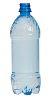
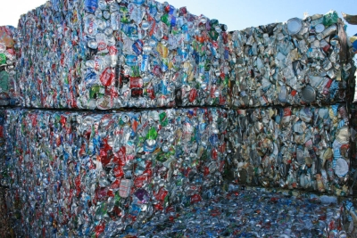

|
 |
Hogyan lesz a PET palackból polárpulcsi?Ma már a magyarok többsége is követendő szokásnak tartja a háztartásokban, irodákban keletkező hulladék válogatva gyűjtését, bár a Magyarországon jelenleg működő több mint 5000 gyűjtősziget a legfrissebb felmérés szerint még mindig kevés ahhoz, hogy mindenkinek „elég közel” legyen. Pedig egy kis kitérővel rengeteget tehetünk az egyre rosszabb állapotban lévő környezetünkért. Kevesebb szemét, kevesebb energia, egészségesebb környezetA szétválogatva gyűjtött hulladék újrahasznosítása során azokat az anyagokat, amelyeket egyébként eldobnánk, szennyezve ezzel a környezetet, nyersanyagként használjuk fel. Az újrahasznosítás, előkelőbb nevén a recycling, energia- és nyersanyagkímélő eljárás: egyrészt csökken a valóban szemét, azaz semmi másra nem használható hulladék mennyisége, másrészt a környezet terhelése is, mivel az újrahasznosítható anyagok révén kevesebb természetes nyersanyagra van szükségünk. Tudtad, hogy
 Mi lesz a szelektíven gyűjtött hulladékból?Sajnos még mindig sokan gondolják azt, hogy a konténereket elszállítás után összeöntik. Ez természetesen nem így történik. A válogatva gyűjtött anyagokból további válogatás és tisztítás után többnyire ugyanaz lesz, ami volt. Az újragyártott üvegből újra üvegpalackok és befőttesüvegek készülnek, a papírból karton, papírtörlő, vécépapír, gipszkarton, és az italos kartondobozokból újra kartondoboz, netán bútorlap. Az aprított üveget felhasználják üveggyapot készítésére vagy készülő új utakban. A legsokoldalúbban a műanyagok használhatók fel. Nemcsak PET palack formájában találkozhatunk újra a bedobált hulladékkal, hanem például DVD-tok, műanyag háztartási eszköz vagy polár pulóver képében. |